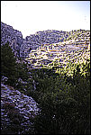

GeographyMesopotamia is made up of different regions, each with its own geography. The geography of each area and the natural resources found there affected the ways that people lived.  Northern Mesopotamia is made up of hills and plains. The land is quite fertile due to seasonal rains, and the rivers and streams flowing from the mountains. Early settlers farmed the land and used timber, metals and stone from the mountains nearby. Southern Mesopotamia is made up of marshy areas and wide, flat, barren plains. Cities developed along the rivers which flow through the region. Early settlers had to irrigate the land along the banks of the rivers in order for their crops to grow. Since they did not have many natural resources, contact with neighbouring lands was important.
| ||||||||